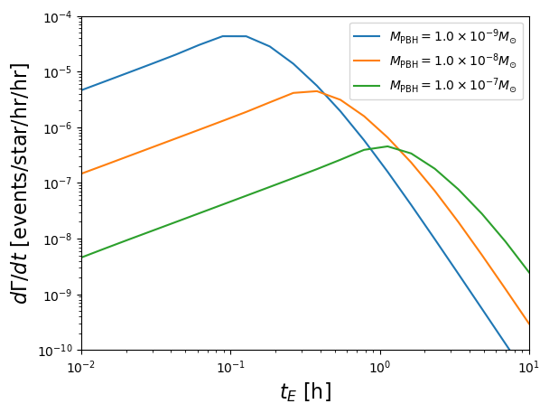
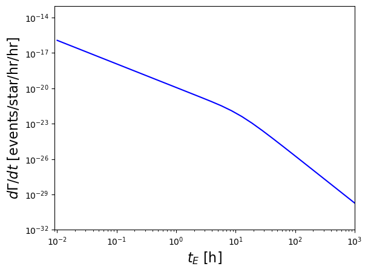
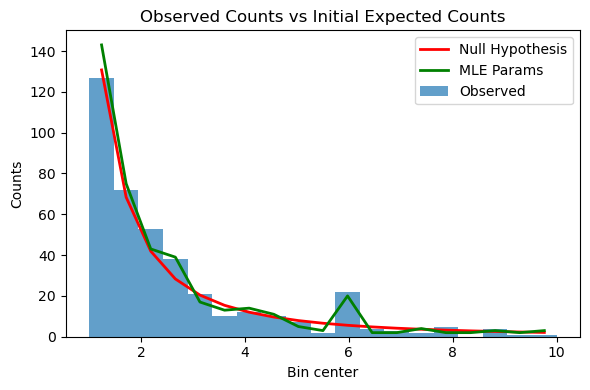

We can calculate the distribution of crossing times for a given PBH population
f_pbh =1# fraction of dark matter in PBHsts = np.logspace(-2, 1, 30)pbhs = [Pbh(10**(i), f_pbh) for i in np.linspace(-9, -7, 3)]result = np.zeros((len(pbhs), len(ts)))for i, pbh inenumerate(pbhs): result[i, :] = pbh.compute_differential_rate(ts)
/Users/nolansmyth/opt/anaconda3/lib/python3.9/site-packages/scipy/integrate/quadpack.py:879: IntegrationWarning: The integral is probably divergent, or slowly convergent.
quad_r = quad(f, low, high, args=args, full_output=self.full_output,
for i, pbh inenumerate(pbhs): plt.loglog(ts, result[i], label=r"$M_{\rm{PBH}} = $"+ scientific_format(pbh.mass,0) +"$M_{\odot}$")plt.xlabel(r"$t_E$ [h]", fontsize=16)plt.ylabel(r"$d\Gamma/dt$ [events/star/hr/hr]", fontsize=16)plt.xlim(1e-2, 1e1)plt.ylim(1e-10, 1e-4)plt.legend()plt.show()

Similarly, we can calculate the distribution of crossing times for an FFP population
#Note: event rate normalized to 1 FFP/ISO per host starplt.loglog(ts, diff_rates, color="blue")plt.xlabel(r"$t_E$ [h]", fontsize=16)plt.ylabel(r"$d\Gamma/dt$ [events/star/hr/hr]", fontsize=16)plt.xlim([0.009, 1e3])plt.ylim([1e-32, 1e-13])plt.show()

Statistics
Eventually will be able to perform statistical analysis on the distributions of crossing times for a given population and compare with output from PopSyCLE. For now, here’s a toy example assuming perfect mass reconstruction
# Generate example observed counts with a bumpmin_bin =1max_bin =10bin_edges = np.linspace(min_bin,max_bin,20) # Assuming bins from 1 to 10bin_centers = (bin_edges[:-1] + bin_edges[1:]) /2a =200# normalization (Proxy for overall count of FFPs)index =-2# power law index (FFP Power Law Index)bump_position =6# position of bump in x (PBH mass)bump_height =20# extra counts at position of bump (PBH counts)observed_counts = generate_observed_counts_with_bump(bin_centers, a, index, bump_position, bump_height)optimized_params = get_MLE_params(bin_centers, observed_counts)expected_counts_opt = generate_observed_counts_with_bump(bin_centers, *optimized_params)print("Optimized parameters: a = {:.2f}, index = {:.2f}, bump_position = {:.2f}, bump_height = {:.2f}".format(*optimized_params))print("True parameters: a = {:.2f}, index = {:.2f}, bump_position = {:.2e}, bump_height = {:.2f}".format(a, index, bump_position, bump_height))
Optimized parameters: a = 217.97, index = -2.10, bump_position = 6.16, bump_height = 16.85
True parameters: a = 200.00, index = -2.00, bump_position = 6.00e+00, bump_height = 20.00
# Plot the observed counts and the initial/optimized expected countsplt.figure(figsize=(6, 4))# plt.subplot(121)plt.bar(bin_centers, observed_counts, alpha=0.7, label="Observed", width=np.diff(bin_edges))plt.plot(bin_centers, power_law(bin_centers, a=a, index=index), label="Null Hypothesis", color='r', linewidth=2)plt.plot(bin_centers, expected_counts_opt, label="MLE Params", color='g', linewidth=2)plt.xlabel("Bin center")plt.ylabel("Counts")# plt.yscale("log")plt.legend()plt.title("Observed Counts vs Initial Expected Counts")plt.tight_layout()plt.show()

# Calculate the likelihood ratio test statisticlr_statistic = llr_test(bin_centers, observed_counts)# Calculate the p-value using a chi-square distributionp_value = chi2.sf(lr_statistic, df=2) # Two degrees of freedom for the difference in number of parameters# Print the resultsprint("Likelihood ratio test statistic:", lr_statistic)print("p-value:", p_value)if p_value <0.05:print("The null hypothesis is rejected at the 95% significance level.")else:print("The null hypothesis is not rejected at the 95% significance level.")
Likelihood ratio test statistic: 30.39002044699052
p-value: 2.517044579761756e-07
The null hypothesis is rejected at the 95% significance level.